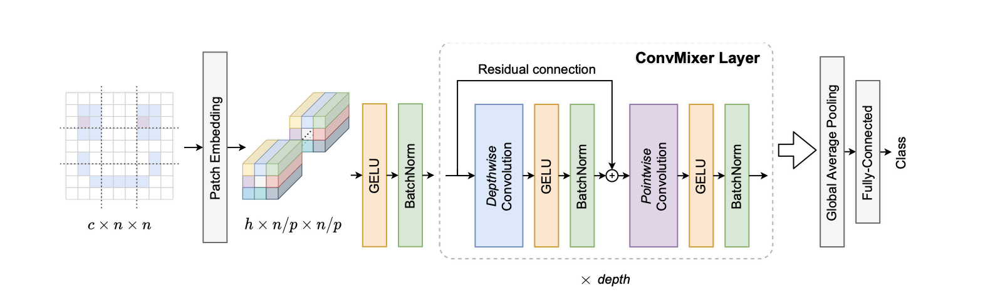

Patches Are All You Need?
- Patches Are All You Need? - Asher Trockman, J. Zico Kolter From: twitter; Link: OpenReview; Published in TMLR 2023
- My Tweet
- file:///Users/bpanthi977/ML/01 MNIST Handwriting - 04 - Patches Are All You Need.ipynb

Figure 1: Patches Are All You Need?
See also:
- Face Detection Network YuNet also uses pointwise and depthwise convolution layers instead of standard convolution layers